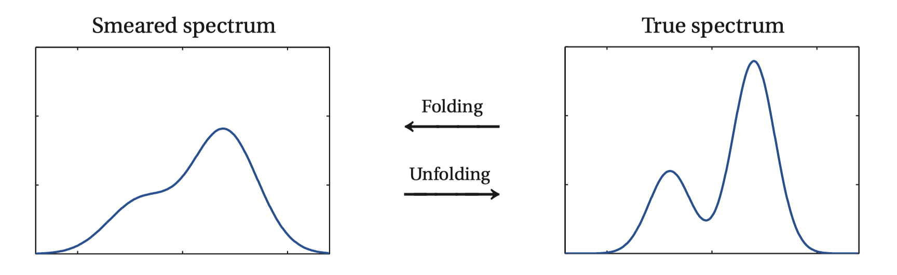

Overview¶
UndersmoothedUnfolding is a software for unfolding in high energy physics with focus on
optimal uncertainty quantification. Most existing unfolding software only provide
methods for optimal point estimation; however, as as demonstrated in Kuusela (2016) [1],
confidence intervals formed from point estimates can suffer from significant undercoverage,
and thus might not be suitable for statistical inference and uncertainty quantification.
UndersmoothedUnfolding is a ROOT [3] implementation of the data-driven
undersmoothing technique introduced in Kuusela (2016) [1], which aims at
choosing the regularization strength so that the resulting unfolded confidence intervals have
nearly nominal coverage.
It is extended from the existing unfolding library, TUnfold [2],
which is included in ROOT [3].
What is unfolding?¶
Any measurement made at the Large Hadron Collider (LHC) at CERN is smeared by the finite resolution of the particle detectors. The goal in unfolding is to use these smeared measurements to make non-parametric inferences about the underlying particle spectrum. The image below visually illustrates folding and unfolding.
| [1] | (1, 2)
|
| [2] |
|
| [3] | (1, 2)
|